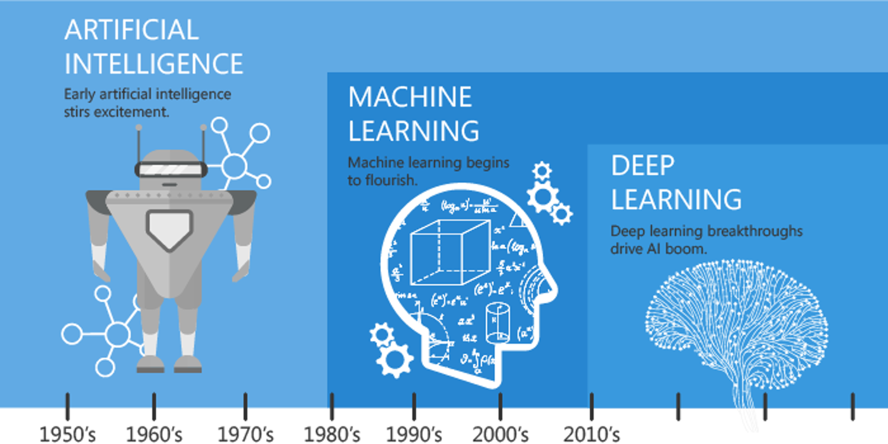
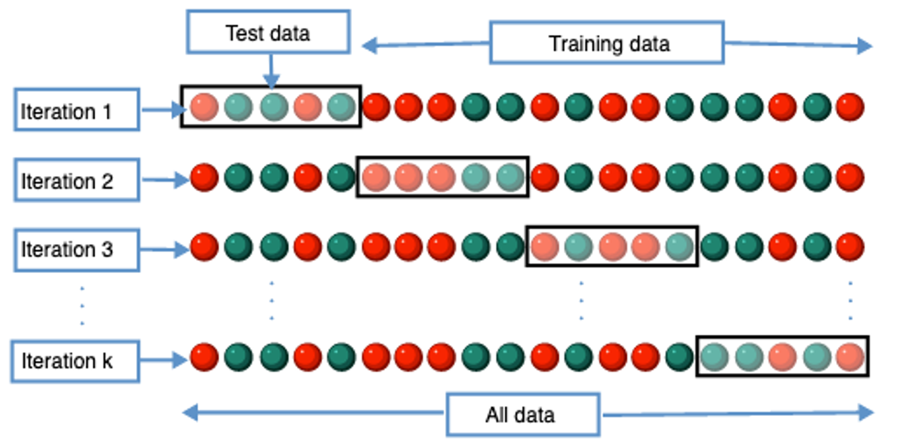
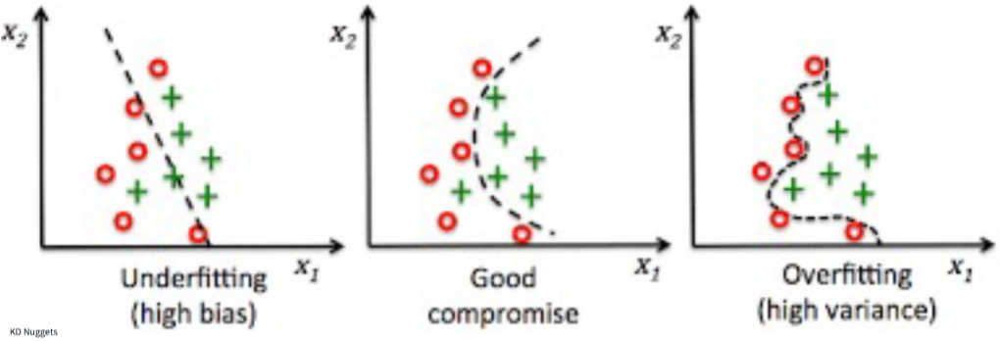
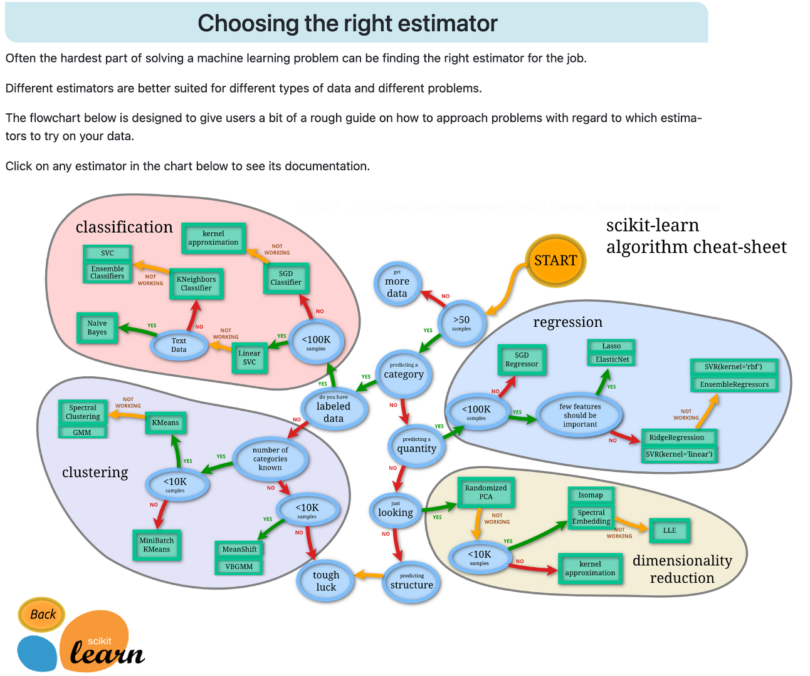
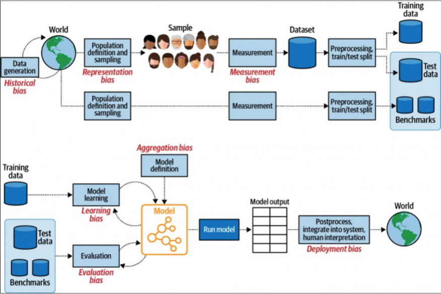
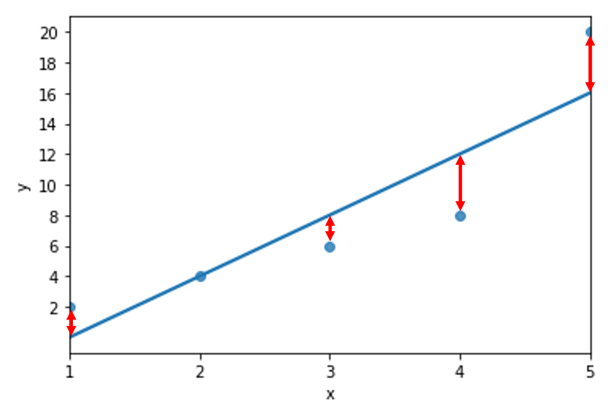

Chapter 2 - Core machine learning concepts; building text vocabularies
Contents
Chapter 2 - Core machine learning concepts; building text vocabularies#
2022 January 26

towardsdatascience.com - figure above and quotes below
!pip install sklearn
Requirement already satisfied: sklearn in /Users/evanmuzzall/.local/share/virtualenvs/SSDS-TAML-xaUfvlpM/lib/python3.9/site-packages (0.0)
Requirement already satisfied: scikit-learn in /Users/evanmuzzall/.local/share/virtualenvs/SSDS-TAML-xaUfvlpM/lib/python3.9/site-packages (from sklearn) (1.1.2)
Requirement already satisfied: scipy>=1.3.2 in /Users/evanmuzzall/.local/share/virtualenvs/SSDS-TAML-xaUfvlpM/lib/python3.9/site-packages (from scikit-learn->sklearn) (1.9.0)
Requirement already satisfied: threadpoolctl>=2.0.0 in /Users/evanmuzzall/.local/share/virtualenvs/SSDS-TAML-xaUfvlpM/lib/python3.9/site-packages (from scikit-learn->sklearn) (3.1.0)
Requirement already satisfied: joblib>=1.0.0 in /Users/evanmuzzall/.local/share/virtualenvs/SSDS-TAML-xaUfvlpM/lib/python3.9/site-packages (from scikit-learn->sklearn) (1.1.0)
Requirement already satisfied: numpy>=1.17.3 in /Users/evanmuzzall/.local/share/virtualenvs/SSDS-TAML-xaUfvlpM/lib/python3.9/site-packages (from scikit-learn->sklearn) (1.23.1)
import matplotlib.pyplot as plt
import pandas as pd
import seaborn as sns
import numpy as np
import math
import sklearn
from sklearn.linear_model import LinearRegression
from sklearn.metrics import mean_squared_error
from sklearn.linear_model import LogisticRegression
from sklearn.model_selection import train_test_split
from sklearn import metrics
from sklearn.feature_extraction.text import CountVectorizer
from sklearn.feature_extraction import DictVectorizer
import scipy.sparse
What is machine learning?#
Machine learning is a toolbox for modeling, investigating, and understanding data. To understand machine learning, a handful of key terms need to be defined.
scikit-learn provides the foundation for this introductory machine learning session.
Be sure to bookmark the below resources. Try them out with data from the data/ folder as well as your own data!
scikit-learn tutorials: https://scikit-learn.org/stable/tutorial/index.html
scikit-learn user guide: https://scikit-learn.org/stable/user_guide.html
Key terms#
Artificial intelligence: “A program that can sense, reason, act, and adapt.”
Machine learning: “Algorithims whose performance improve as they are exposed to more data over time.”
Deep learning: “Subset of machine learning in which multilayered neural networks learn from vast amounts of data.”
Neural network: A type of algorithm modeled after the human brain, consisting of multiple layers of nodes/neurons.
x and y variables#
x variables are the independent variables. You will also see these referred to in a variety of contexts as features, covariates, predictors, input, or explanatory variables.
The y variable is the dependent variable. This is also referred to as the response, outcome, and target variable.
Types of machine learning:#
Supervised machine learning: algorithms train models that (best) learn the relationships between the x and y variables on a labeled dataset (called the training set, where the ground truth y variable is known). The performance of the trained model is then evaluated after it predicts the outcome on new data that the model has never seen before (called the test set) where where ground truth y label is unknown.
The equation looks like: \(y=f(x)+ϵ\)
\(f\) is the unknown function that relates x to y and is estimated
\(ϵ\) is random error independent of x and averages to zero
Data splitting: Training and test performance#
Preparation for supervised methods requires a split of the dataset into training and test sets.
Training set: is comprised of the data that will be used by the model to learn the relationships between the x and y variables. This “usually” consists of a majority portion of the rows in the dataset, such as 70%.
Test set: consists of the holdout data that the trained model has not yet seen and where the trained model will try predict the unknown labels. This “usually” consists of the remaining 30% of rows.
NOTE: These values are somewhat arbitrary. It could be argued that the more training data that are available, the “better” your model might be. Conversely, more test data could lead to higher performance on the test data.
Furthermore, if you have millions of rows of data, a splits of 50:50 or 99:1 might also work fine depending on the context.
Performance is generally assessed through cost or loss functions such as misclassification error, sensitivity/specificity, precision/recall, (root) mean squared error, R-squared, AIC, BIC, and other confusion matrix derivations.
Cross-validation is the best way to split your data, because it repeats the train/test data splitting process \(k\) number of times and rotates the test set each time so that every observation is included in a test set at least once. Performance results are then averaged to compute predictive performance.

Model evaluation#

Underfit: A model is underfit if it performs poorly on the training data because it could not discern the relationship(s) between the x and y variables.
Overfit: A model is overfit if it performs well on the training dataset but poorly on the test set.
Bias/variance tradeoff:
Bias refers to the systematic error due to incorrect assumptions about the machine learning process or the framing of the problem itself. High bias models generally underfit and/or contain large amounts of error.
Variance refers to changes in the model predictive accuracy due to fluctuations in the training set or when using different training datasets, and how much the model can adjust to each. High variance could be due to model complexity, noise in the dataset, and overfitting.
The tradeoff means that models with high bias will have low variance, and vice-versa. The goal is to find the optimal combination of these two factors for your problem.
Classification versus regression#
Supervised classification: models probability that y is 1 given the covariates x and is performed when y is categorical (either binary yes/no or multinomial): \(Pr(y=1|x)\)
Medical diagnosis
Image classification
Fraud detection
Sentiment analysis
Supervised regression: models the conditional mean probability \(E(y|x)\) and is performed when y is continuous (i.e., integer or float).
Life expectancy
Population growth
Weather forecasting
Stock market prediction
Supervised algorithms include:
Regressions: ordinary least squares, generalized linear model, lasso
Tree-based methods: decision tree, random forest, boosted trees
Kernel-based methods: various; transform non-linear to linear space
View scikit-learn’s interactive documentation for estimator (algorithm) selection: https://scikit-learn.org/stable/tutorial/machine_learning_map/index.html

Unsupervised machine learning: algorithms are used to sort unlabeled datasets, without attempting to predict anything.
The equation could simply look like: \(\sim\ x\)
Algorithms include:
Clustering: hierarchical agglomerative, k-means, centroid, density-based, DBSCAN, GLRM
Dimension reduction: PCA, t-SNE, UMAP
Reinforcement: algorithims are used to make real-time decisions and skill acquisition in fields such as game-theory and robotics.
Other: semi-supervised, etc.
Bias in research

Ethical considerations:
Begin to familiarize yourself with the many ethnical points to consider along with their real-world implications:
OLS example - by “hand”#
Ordinary least squares regression provides a great example of the machine learning process and some of the key terms defined above.
Generate toy data#
import pandas as pd
data = pd.DataFrame({"x": [1,2,3,4,5],
"y": [2,4,6,8,20]})
data
| x | y | |
|---|---|---|
| 0 | 1 | 2 |
| 1 | 2 | 4 |
| 2 | 3 | 6 |
| 3 | 4 | 8 |
| 4 | 5 | 20 |
Calculate means of x and y#
x_mean = round(sum(data.x) / len(data.x), 2)
y_mean = round(sum(data.y) / len(data.y), 2)
print("mean of x:", x_mean)
print("mean of y:", y_mean)
mean of x: 3.0
mean of y: 8.0
Visualize the data (training data)#
Plot the known relationships between x and y.
plt.scatter(data.x, data.y);
Calculate error for each observation#
Error (least squares method) is the difference between each observation and the mean. Below this will be represented visually by the distance between each point and the line of best fit.
x_error = data.x - x_mean
y_error = data.y - y_mean
# x
print(data.x)
print(x_mean)
print(x_error)
0 1
1 2
2 3
3 4
4 5
Name: x, dtype: int64
3.0
0 -2.0
1 -1.0
2 0.0
3 1.0
4 2.0
Name: x, dtype: float64
# y
print(data.y)
print(y_mean)
print(y_error)
0 2
1 4
2 6
3 8
4 20
Name: y, dtype: int64
8.0
0 -6.0
1 -4.0
2 -2.0
3 0.0
4 12.0
Name: y, dtype: float64
Compute beta coefficients#
## Estimate the B1 coefficient (slope)
B1 = sum((data.x - x_mean) * (data.y - y_mean)) / sum((data.x - x_mean) **2)
print("slope (B1) is: ", B1)
## Estimate B0 coefficient (intercept)
B0 = y_mean - (B1 * x_mean)
print("intercept (B0) is: ", B0)
slope (B1) is: 4.0
intercept (B0) is: -4.0
Plot best fit line#
import seaborn as sns
import numpy as np
sns.regplot(data = data,
x = "x", y = "y",
ci = None)
plt.xticks(np.arange(min(data.x), max(data.x)+1, 1.0))
plt.yticks(np.arange(min(data.y), max(data.y)+1, 2.0));
Generate the predictions (test set)#
y_hat = B0 + B1 * data.x
print("Ground truth y values:")
print(data.y)
print()
print("Predicted y values:")
print(y_hat)
Ground truth y values:
0 2
1 4
2 6
3 8
4 20
Name: y, dtype: int64
Predicted y values:
0 0.0
1 4.0
2 8.0
3 12.0
4 16.0
Name: x, dtype: float64
Visualize the error for each observation#

Evaluate the performance using RMSE#
Root mean squared error is a handy performance metric because it has the same units of whatever is plotted on the y-axis.
In our toy example here, we are off an average of 2.82843 units on the y-axis of a given data point from the line of best fit.
# 1. Square each error
y_error_sq = y_error ** 2
print(y_error_sq)
0 36.0
1 16.0
2 4.0
3 0.0
4 144.0
Name: y, dtype: float64
# 2. Sum these values
sum_error_sq = sum(y_error_sq)
print(sum_error_sq)
200.0
# 3. Calculate RMSE - the square root of summed squared error divided by the length of y
import math
RMSE = math.sqrt(sum_error_sq) / len(data.y)
print(round(RMSE, 5))
2.82843
Compare our by “hand” results to the scikit-learn version!#
# use scikit-learn to compute R-squared value
from sklearn.linear_model import LinearRegression
lin_mod = LinearRegression().fit(data[['x']], data[['y']])
print("R-squared: " + str(lin_mod.score(data[['x']], data[['y']])))
R-squared: 0.8
# use scikit-learn to compute slope and intercept
print("scikit-learn slope: " + str(lin_mod.coef_))
print("scikit-learn intercept: " + str(lin_mod.intercept_))
scikit-learn slope: [[4.]]
scikit-learn intercept: [-4.]
# compare to our by "hand" versions. Both are the same!
print(int(lin_mod.coef_) == B1)
print(int(lin_mod.intercept_) == B0)
True
True
# use scikit-learn to compute RMSE
from sklearn.metrics import mean_squared_error
RMSE_scikit = round(mean_squared_error(data.y, y_hat, squared = False), 5)
print(RMSE_scikit)
2.82843
# Does our hand-computed RMSE equal that of scikit-learn at 5 digits?? Yes!
print(round(RMSE, 5) == round(RMSE_scikit, 5))
True
Supervised machine learning - logistic regression#
Fortunately, you do not have to do any of this by hand thanks to scikit-learn!
Here is a short workflow to fit a logistic regression model. Logistic regression is similar to linear regression \(y \sim\ x\) but regresses for the probability of a categorical outcome.
Let’s calculate training and test set accuracy to predict whether a penguin is MALE or FEMALE based on thier biological and spatial characteristics.
# load data
penguins = pd.read_csv("data/penguins.csv")
penguins.head()
| species | island | bill_length_mm | bill_depth_mm | flipper_length_mm | body_mass_g | sex | |
|---|---|---|---|---|---|---|---|
| 0 | Adelie | Torgersen | 39.1 | 18.7 | 181.0 | 3750.0 | MALE |
| 1 | Adelie | Torgersen | 39.5 | 17.4 | 186.0 | 3800.0 | FEMALE |
| 2 | Adelie | Torgersen | 40.3 | 18.0 | 195.0 | 3250.0 | FEMALE |
| 3 | Adelie | Torgersen | NaN | NaN | NaN | NaN | NaN |
| 4 | Adelie | Torgersen | 36.7 | 19.3 | 193.0 | 3450.0 | FEMALE |
Preprocess the data - remove rows with NaN (missing) values#
# count number of rows with missing data in penguins. Eleven...
penguins.isnull().any(axis=1).sum()
11
# make a copy with listwise deleted rows
p_complete = penguins.dropna()
# count number of rows with missing data in p_complete. Zero!
p_complete.isnull().any(axis=1).sum()
0
Preprocess the data - convert categorical variables to indicators#
Check out this great tutorial on one-hot encoding to learn more.
# convert island categorical variable into numeric indicators
p_dummy_island = pd.get_dummies(p_complete.island, prefix = "island")
p_dummy_island.head()
| island_Biscoe | island_Dream | island_Torgersen | |
|---|---|---|---|
| 0 | 0 | 0 | 1 |
| 1 | 0 | 0 | 1 |
| 2 | 0 | 0 | 1 |
| 4 | 0 | 0 | 1 |
| 5 | 0 | 0 | 1 |
# convert species categorical variable into numeric indicators
p_dummy_species = pd.get_dummies(p_complete.species, prefix = "species")
p_dummy_species.head()
| species_Adelie | species_Chinstrap | species_Gentoo | |
|---|---|---|---|
| 0 | 1 | 0 | 0 |
| 1 | 1 | 0 | 0 |
| 2 | 1 | 0 | 0 |
| 4 | 1 | 0 | 0 |
| 5 | 1 | 0 | 0 |
Preprocess the data - remove the island and species variables from p_complete#
# view column names
print(p_complete.columns)
# drop the first and second columns
p_complete = p_complete.drop(p_complete.columns[[0, 1]], axis=1)
p_complete.head()
Index(['species', 'island', 'bill_length_mm', 'bill_depth_mm',
'flipper_length_mm', 'body_mass_g', 'sex'],
dtype='object')
| bill_length_mm | bill_depth_mm | flipper_length_mm | body_mass_g | sex | |
|---|---|---|---|---|---|
| 0 | 39.1 | 18.7 | 181.0 | 3750.0 | MALE |
| 1 | 39.5 | 17.4 | 186.0 | 3800.0 | FEMALE |
| 2 | 40.3 | 18.0 | 195.0 | 3250.0 | FEMALE |
| 4 | 36.7 | 19.3 | 193.0 | 3450.0 | FEMALE |
| 5 | 39.3 | 20.6 | 190.0 | 3650.0 | MALE |
Recombine the numeric indicators with the other variables#
clean_penguins = pd.concat([p_dummy_island, p_dummy_species, p_complete], axis=1)
clean_penguins.head()
| island_Biscoe | island_Dream | island_Torgersen | species_Adelie | species_Chinstrap | species_Gentoo | bill_length_mm | bill_depth_mm | flipper_length_mm | body_mass_g | sex | |
|---|---|---|---|---|---|---|---|---|---|---|---|
| 0 | 0 | 0 | 1 | 1 | 0 | 0 | 39.1 | 18.7 | 181.0 | 3750.0 | MALE |
| 1 | 0 | 0 | 1 | 1 | 0 | 0 | 39.5 | 17.4 | 186.0 | 3800.0 | FEMALE |
| 2 | 0 | 0 | 1 | 1 | 0 | 0 | 40.3 | 18.0 | 195.0 | 3250.0 | FEMALE |
| 4 | 0 | 0 | 1 | 1 | 0 | 0 | 36.7 | 19.3 | 193.0 | 3450.0 | FEMALE |
| 5 | 0 | 0 | 1 | 1 | 0 | 0 | 39.3 | 20.6 | 190.0 | 3650.0 | MALE |
Recode MALE as 1 and FEMALE as 0#
clean_penguins['sex'] = clean_penguins['sex'].map({'MALE': 1, 'FEMALE': 0})
clean_penguins.head()
| island_Biscoe | island_Dream | island_Torgersen | species_Adelie | species_Chinstrap | species_Gentoo | bill_length_mm | bill_depth_mm | flipper_length_mm | body_mass_g | sex | |
|---|---|---|---|---|---|---|---|---|---|---|---|
| 0 | 0 | 0 | 1 | 1 | 0 | 0 | 39.1 | 18.7 | 181.0 | 3750.0 | 1 |
| 1 | 0 | 0 | 1 | 1 | 0 | 0 | 39.5 | 17.4 | 186.0 | 3800.0 | 0 |
| 2 | 0 | 0 | 1 | 1 | 0 | 0 | 40.3 | 18.0 | 195.0 | 3250.0 | 0 |
| 4 | 0 | 0 | 1 | 1 | 0 | 0 | 36.7 | 19.3 | 193.0 | 3450.0 | 0 |
| 5 | 0 | 0 | 1 | 1 | 0 | 0 | 39.3 | 20.6 | 190.0 | 3650.0 | 1 |
Define your logistic regression object#
from sklearn.linear_model import LogisticRegression
lr = LogisticRegression(solver = 'liblinear')
# Use something like the code below for multi-class classification
# lr = LogisticRegression(multi_class='multinomial', solver='lbfgs')
Split the clean_penguins dataset into training and test sets#
# Define x and y for both training and test sets
from sklearn.model_selection import train_test_split
x = clean_penguins[['island_Biscoe', 'island_Dream', 'island_Torgersen', 'species_Adelie',
'species_Chinstrap', 'species_Gentoo', 'bill_length_mm',
'bill_depth_mm', 'flipper_length_mm', 'body_mass_g']]
y = np.array(clean_penguins['sex'])
x_train, x_test, y_train, y_test = train_test_split(x, y, test_size = 0.3, random_state = 123)
x_train.shape
(233, 10)
x_test.shape
(100, 10)
len(y_train)
233
len(y_test)
100
Fit the model to the training data (0.84 accuracy)#
lr.fit(x_train, y_train)
LogisticRegression(solver='liblinear')In a Jupyter environment, please rerun this cell to show the HTML representation or trust the notebook.
On GitHub, the HTML representation is unable to render, please try loading this page with nbviewer.org.
LogisticRegression(solver='liblinear')
# View the accuracy
lr.score(x_train, y_train)
0.8412017167381974
Generate predicted values on the test data#
# Generate predicted y values based on the x test set data
predictions = lr.predict(x_test)
predictions
array([1, 1, 0, 0, 1, 0, 0, 0, 1, 1, 0, 1, 1, 1, 0, 1, 0, 1, 0, 1, 1, 0,
1, 1, 1, 1, 1, 1, 0, 0, 0, 1, 1, 0, 0, 0, 0, 0, 1, 0, 0, 1, 1, 1,
1, 0, 1, 0, 1, 0, 1, 1, 1, 0, 0, 0, 1, 1, 1, 0, 1, 1, 1, 1, 1, 1,
0, 1, 0, 1, 1, 1, 0, 1, 1, 0, 1, 0, 1, 1, 1, 0, 1, 0, 0, 0, 0, 0,
0, 1, 1, 1, 0, 1, 1, 0, 1, 0, 0, 1])
Calculate test set accuracy (0.81 accuracy)#
test_score = lr.score(x_test, y_test)
print(test_score)
0.81
from sklearn import metrics
cm = metrics.confusion_matrix(y_test, predictions)
print(cm)
[[34 10]
[ 9 47]]
# Fancy it up! Use plt.savefig() to export
plt.figure(figsize=(8,8))
sns.heatmap(cm, annot = True, fmt = ".0f",
cbar = False, linewidths = 2,
square = True, cmap = 'YlGnBu', annot_kws={"size": 20})
plt.ylabel('Ground truth y label')
plt.xlabel('Predicted y label')
all_sample_title = 'Accuracy Score: {0}'.format(test_score)
plt.title(all_sample_title, size = 15);
Building text vocabularies#
What about how text is predicted? If we have text as data, we also need to convert the representation of text into a format that machine learning algorithms can understand.
Define a corpus#
corpus = [
"First document text goes in this list of strings.",
"Second document text goes here as well.",
"Third document text text.",
"Document four!"
]
corpus
['First document text goes in this list of strings.',
'Second document text goes here as well.',
'Third document text text.',
'Document four!']
Bag of words model with CountVectorizer#
The bag of words models represents text as a bag of its word, ignoring syntactical elements like grammar and word order while only preserving the multiplicy/frequency of unique tokens. Typically, a bag of words model removes punctuation and casefolds the text to lowercase before counting the words (i.e. ‘Apple’ and ‘apple’ will both count toward instances of the word, ‘apple’).
from sklearn.feature_extraction.text import CountVectorizer
# create the bag of words
vectorizer = CountVectorizer()
# the .fit method will learn the vocabulary
vectorizer.fit(corpus)
# Print the vocabulary
vectorizer.vocabulary_
{'first': 2,
'document': 1,
'text': 11,
'goes': 4,
'in': 6,
'this': 13,
'list': 7,
'of': 8,
'strings': 10,
'second': 9,
'here': 5,
'as': 0,
'well': 14,
'third': 12,
'four': 3}
Document term matrix#
A document term matrix displays term frequencies in sparse format across a collection of docuemnts. The .transform method will help us here!
The first number is the document number
The second number is the word from the vocabulary
The third number is the number of times that word occurs
vector = vectorizer.transform(corpus)
print(vector)
(0, 1) 1
(0, 2) 1
(0, 4) 1
(0, 6) 1
(0, 7) 1
(0, 8) 1
(0, 10) 1
(0, 11) 1
(0, 13) 1
(1, 0) 1
(1, 1) 1
(1, 4) 1
(1, 5) 1
(1, 9) 1
(1, 11) 1
(1, 14) 1
(2, 1) 1
(2, 11) 2
(2, 12) 1
(3, 1) 1
(3, 3) 1
Present the sparse matrix#
# each row is a document, each column is a word from the vocabulary!
# 1 means that word is present in that particular document
print(vector.toarray())
[[0 1 1 0 1 0 1 1 1 0 1 1 0 1 0]
[1 1 0 0 1 1 0 0 0 1 0 1 0 0 1]
[0 1 0 0 0 0 0 0 0 0 0 2 1 0 0]
[0 1 0 1 0 0 0 0 0 0 0 0 0 0 0]]
# get the column names (alphabetical sort)
vectorizer.get_feature_names()
/Users/evanmuzzall/.local/share/virtualenvs/SSDS-TAML-xaUfvlpM/lib/python3.9/site-packages/sklearn/utils/deprecation.py:87: FutureWarning: Function get_feature_names is deprecated; get_feature_names is deprecated in 1.0 and will be removed in 1.2. Please use get_feature_names_out instead.
warnings.warn(msg, category=FutureWarning)
['as',
'document',
'first',
'four',
'goes',
'here',
'in',
'list',
'of',
'second',
'strings',
'text',
'third',
'this',
'well']
# What does this tell us?
vectorizer.transform(['document']).toarray()
array([[0, 1, 0, 0, 0, 0, 0, 0, 0, 0, 0, 0, 0, 0, 0]])
# 'document' is present in our bag of words, and in the sparse matrix, occupies the second column!
# What if we try to transform a token that isn't in our bag of words?
vectorizer.transform(['abracadabra']).toarray()
array([[0, 0, 0, 0, 0, 0, 0, 0, 0, 0, 0, 0, 0, 0, 0]])
N-grams#
While we have focused on single words above, we can apply this approach to multi-word phrases in order to try to predict linguistic instances and potentially better understand context of a corpus of documents.
Use the below token patterns:
bigrams
ngram_range = (1, 2)trigrams
ngram_range = (1, 3)etc.
# token pattern is written using regular expressions (regex for short):
# '\b' signifies the empty string ("") at the beginning or end of a word,
# '\w' is any character,
# '+' signifies that the regex can match one or more instances of the prior character (in this case, '\w')
# question: what does '\b\w+\b' mean then?
bigram_vectorizer = CountVectorizer(ngram_range = (1,2),
token_pattern = r'\b\w+\b',
min_df = 1)
bigram_vectorizer
CountVectorizer(ngram_range=(1, 2), token_pattern='\\b\\w+\\b')In a Jupyter environment, please rerun this cell to show the HTML representation or trust the notebook.
On GitHub, the HTML representation is unable to render, please try loading this page with nbviewer.org.
CountVectorizer(ngram_range=(1, 2), token_pattern='\\b\\w+\\b')
Since we specify bigrams, both unigrams and bigrams are returned!
from sklearn.feature_extraction import DictVectorizer
bigram_analyzer = bigram_vectorizer.build_analyzer()
bigram_analyzer('Welcome to Stanford Libraries!')
['welcome',
'to',
'stanford',
'libraries',
'welcome to',
'to stanford',
'stanford libraries']
Apply n-grams to our above corpus#
corpus
['First document text goes in this list of strings.',
'Second document text goes here as well.',
'Third document text text.',
'Document four!']
# perform the transformation
x = bigram_vectorizer.fit_transform(corpus).toarray()
print(x)
[[0 0 1 0 1 1 1 0 1 0 1 0 0 1 1 1 1 1 1 0 0 1 1 1 0 0 0 1 1 0]
[1 1 1 0 1 0 0 0 1 1 0 1 1 0 0 0 0 0 0 1 1 0 1 1 0 0 0 0 0 1]
[0 0 1 0 1 0 0 0 0 0 0 0 0 0 0 0 0 0 0 0 0 0 2 0 1 1 1 0 0 0]
[0 0 1 1 0 0 0 1 0 0 0 0 0 0 0 0 0 0 0 0 0 0 0 0 0 0 0 0 0 0]]
# get the feature (column) names
# remember the rows are our four documents!
bigram_vectorizer.get_feature_names()
['as',
'as well',
'document',
'document four',
'document text',
'first',
'first document',
'four',
'goes',
'goes here',
'goes in',
'here',
'here as',
'in',
'in this',
'list',
'list of',
'of',
'of strings',
'second',
'second document',
'strings',
'text',
'text goes',
'text text',
'third',
'third document',
'this',
'this list',
'well']
# search for vocabulary words across the documents
feature_index = bigram_vectorizer.vocabulary_.get('first document')
x[:, feature_index]
array([1, 0, 0, 0])
Data frame vocabulary across documents#
Our vocabulary consists of 29 unigrams and bigrams across the four documents.
# redefine x as sparse matrix (not array)
x = bigram_vectorizer.fit_transform(corpus)
print(x)
(0, 5) 1
(0, 2) 1
(0, 22) 1
(0, 8) 1
(0, 13) 1
(0, 27) 1
(0, 15) 1
(0, 17) 1
(0, 21) 1
(0, 6) 1
(0, 4) 1
(0, 23) 1
(0, 10) 1
(0, 14) 1
(0, 28) 1
(0, 16) 1
(0, 18) 1
(1, 2) 1
(1, 22) 1
(1, 8) 1
(1, 4) 1
(1, 23) 1
(1, 19) 1
(1, 11) 1
(1, 0) 1
(1, 29) 1
(1, 20) 1
(1, 9) 1
(1, 12) 1
(1, 1) 1
(2, 2) 1
(2, 22) 2
(2, 4) 1
(2, 25) 1
(2, 26) 1
(2, 24) 1
(3, 2) 1
(3, 7) 1
(3, 3) 1
import scipy.sparse
corpus_df = pd.DataFrame(x.todense(), columns = bigram_vectorizer.get_feature_names())
corpus_df
| as | as well | document | document four | document text | first | first document | four | goes | goes here | ... | second document | strings | text | text goes | text text | third | third document | this | this list | well | |
|---|---|---|---|---|---|---|---|---|---|---|---|---|---|---|---|---|---|---|---|---|---|
| 0 | 0 | 0 | 1 | 0 | 1 | 1 | 1 | 0 | 1 | 0 | ... | 0 | 1 | 1 | 1 | 0 | 0 | 0 | 1 | 1 | 0 |
| 1 | 1 | 1 | 1 | 0 | 1 | 0 | 0 | 0 | 1 | 1 | ... | 1 | 0 | 1 | 1 | 0 | 0 | 0 | 0 | 0 | 1 |
| 2 | 0 | 0 | 1 | 0 | 1 | 0 | 0 | 0 | 0 | 0 | ... | 0 | 0 | 2 | 0 | 1 | 1 | 1 | 0 | 0 | 0 |
| 3 | 0 | 0 | 1 | 1 | 0 | 0 | 0 | 1 | 0 | 0 | ... | 0 | 0 | 0 | 0 | 0 | 0 | 0 | 0 | 0 | 0 |
4 rows × 30 columns
# The features (columns) are the vocabulary from the bigram version of our corpus variable above!
corpus_df.columns
Index(['as', 'as well', 'document', 'document four', 'document text', 'first',
'first document', 'four', 'goes', 'goes here', 'goes in', 'here',
'here as', 'in', 'in this', 'list', 'list of', 'of', 'of strings',
'second', 'second document', 'strings', 'text', 'text goes',
'text text', 'third', 'third document', 'this', 'this list', 'well'],
dtype='object')
Quiz - Classic horror novel vocabulary#
Create a single sparse data frame that contains the vocabulary for Frankenstein and Dracula. You should only have two rows (one for each of these novels), but potentially thousands of columns to represent the vocabulary across the two texts.